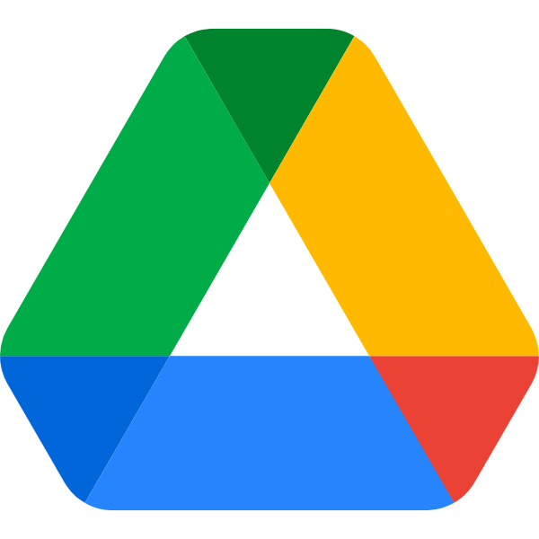

Box をお使いの会社の、AI ワークスペース
Box にある資料を、
AI で活かせる知識に。
Box とつなぐだけ。いまあるファイルを移行せずに、
AI で探して、まとめて、資料にできます。
Box● 接続済み
P提案書_v2.pptx
X価格表_2026.xlsx
PDF製品仕様書.pdf
⟳ 自動で同期 → AI で検索・活用
こんな場面、ありませんか
XLSX
PPTX
PDF
DOCX
M4A
PDF
数秒
過去の経緯・資料の検索Box の資料に聞くだけ。出典つきで回答※
14日→即日
提案資料の作成サイクルBox の資料から AI がスライドを作成※
30分→数分
会議後の議事録整理録るだけで、御社の書式のまま完成※
※ 本紙の時間・効果等の数値は、GBase 導入企業の実運用および社内ベンチマークをもとに推計した目安です。会議の長さ・業種・案件規模により個別差があります。
Box の資料を起点に、GBase ひとつで
AI チャット検索
Box の資料に質問
ふだんの言葉で聞くだけ。Box の資料と会議の記録を横断して探し、出典つきで答えます。
- 根拠をその場で確認
- プロジェクトごとに権限を設定
- ディープリサーチ社内 ＋ Web を深く調査
AI スライド
資料づくりを自動化
Box の資料や回答から、スライドを自動で作成。対話しながらその場で修正できます。
- PowerPoint 形式で書き出し
- 書き出し後も編集可能
- PDF / Excel でも出力
AI 会議ノート
録音から議事録まで
PC や iPhone で録るだけ。話者ごとの文字起こしと、決定事項・ToDo の要約が自動で整います。
- 御社の Word / Excel 様式で出力
- Zoom / Teams の会議も記録
- 10言語の会議に対応
Box とつなぐだけ
Box にある資料が、移行作業なしで AI の回答ソースになります。SharePoint・Google ドライブにも対応。
P提案書_v2.pptx
X価格表_2026.xlsx
PDF製品仕様書.pdf
▶
Box● 接続済み

Google ドライブ対応
Box と自動で同期。チームで共有できます
会社の情報を預けても、安心
お預かりする会議・文書データは、第三者認証を取得した体制で管理します。
✓ISO/IEC 27017ISMS クラウドセキュリティ認証取得
AI 学習に利用なし会議・文書データはモデル学習の対象外
アクセス権限管理AI の回答も権限の範囲内だけ
データ分離ISMAP 登録の AWS で組織ごとに保管
監査ログ誰が・いつ・何をしたかを記録
セキュリティチェックシートへの回答も承ります
使い方は
3ステップ
Box をつないでおくいまある資料がそのまま知識に
14日間 無料トライアル
gbase.ai
導入のご相談・デモのご依頼も QR コードから
中央区・日本橋の AI 企業です
Sparticle株式会社
〒103-0001
東京都中央区日本橋小伝馬町6-12 日本橋森ビル 3F
https://www.sparticle.com/
※ 記載の会社名・製品名は各社の商標または登録商標です。